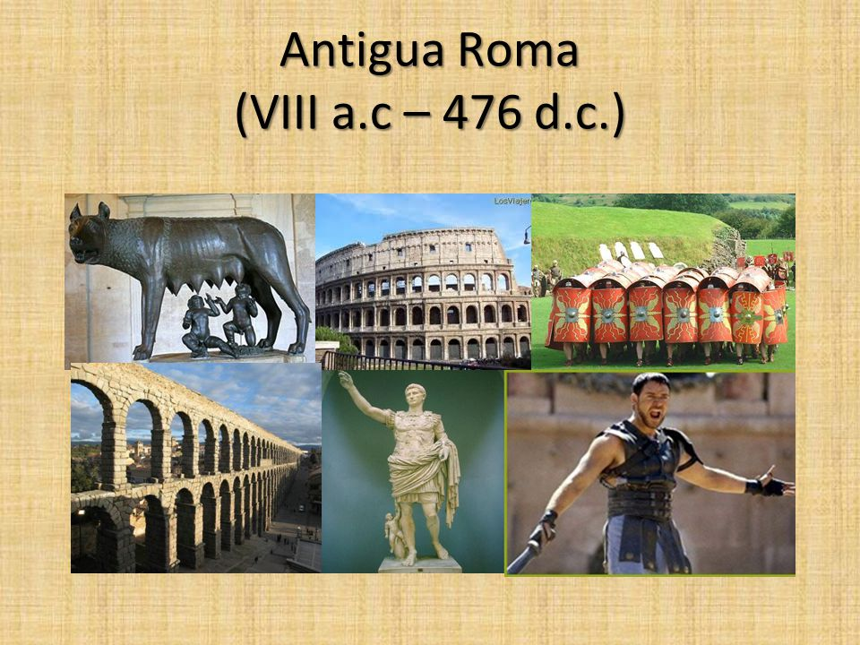
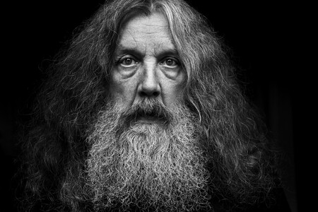

RESPOSTES
Història
- El momento histórico a partir del cual se considera que empieza la edad Media es la caída del Imperio Romano de Occidente, en el 476 d.C.

Geografía
El monte más alto del mundo es el Everest, en la cordillera del Himalaya.
Entretenimiento
El autor de esta historia es Alan Moore.

Arte y literatura
Fue pintado por Pablo Picasso.

Naturaleza y ciencias
Las células más numerosas en esta parte del cuerpo humano no son las neuronas, sino las células gliales, o la glía.

Deportes y pasatiempos
En la ciudad italiana de Urbino.